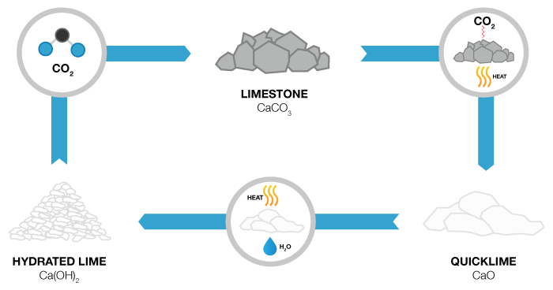
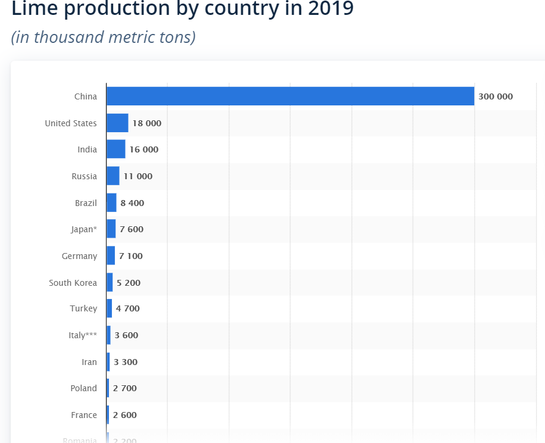
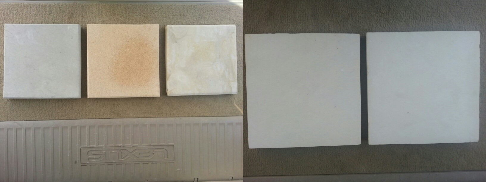

A Brief History of Lime
The earliest documented use of lime in construction was approximately 4000 BC when it was used in Egypt for plastering the pyramids. It was discovered that limestone when burnt and combined with water produced a material that would harden with age.
Even the Roman Empire used lime-based mortars extensively. Vitruvius, a Roman architect, provided basic guidelines for lime mortar mixes:
"... When it [the lime] is slaked, let it be mingled with the sand in such a way that if it is pit sand three of sand and one of lime is poured in; but if the same is from the river or sea, two of sand and one of lime is thrown together. For in this way there will be the right proportion of the mixture and blending."
As an example, Roman aqueducts were made of limescale. But it wasn’t just used for construction. Interestingly from courthouses, to pyramids, to temples, all the way to your home, limestone has shaped architecture in many ways with its natural beauty.
Limestone: Architecture & Symbolism
As an architectural stone, limestone has always been popular due to its graceful ageing; the beauty of limestone is timeless. In ancient times, the Great Sphinx in Egypt and the Great Pyramid of Giza, both built between 2550 and 2490 BC were made of limestone. In Greece, the architects of both The Parthenon built between 447 and 432 B.C, and The Temple of Apollo, Delphi, 330 B.C. also chose the remarkable stone.
UK national treasures were also constructed of lime; examples include the Palace of Westminster in 1347, the Tower of London in 1349 and the first stone London Bridge in 1350. Again it’s also limestone that springs to mind when you think of Britain’s prestigious Oxford and Cambridge universities.
No country was exempt and in modern times Washington’s Lincoln Memorial (1914-22 (interrupted by the war), and New York’s Empire State Building (1930-31) have been constructed of limestone.
Perhaps, famously, or indeed, infamously when 9/11 occurred in New York a hijacked plane crashed into the western side of the massive Pentagon. Showing true American resilience, the reconstruction was made with “The Nation’s Building Stone”, natural Indiana limestone. Since then, it has become known as a symbol of the true American toughness to carry on through tragedy.
The reasons for using lime in mortar 2000 years ago, still remain valid today in modern masonry construction. Limestone has also been a key raw material in cement production since the 19th century, meaning it has played a hugely important role in the construction industry in modern society.
What is Lime?
Limestone is a carbonate sedimentary rock, containing silica and made up largely of the mineral calcite. The primary source of the calcite is marine organisms that secrete shells made of aragonite or calcite, leaving these shells behind when they die. In addition there are carbonate grains such as ooids, peloids, intraclasts, and extraclasts that also make up the limestone.
Calcite can be dissolved or precipitated by groundwater, depending on several factors, including the water temperature, pH, and dissolved ion concentrations. Calcite exhibits an unusual characteristic called retrograde solubility, in which it becomes less soluble in water as the temperature increases. The result of this is that below about 3,000 meters, water pressure and temperature conditions cause the dissolution of calcite to increase nonlinearly, so limestone typically does not form in deeper waters but is reserved to lakes and shorelines.
Impurities (such as clay, sand, organic remains, iron oxide, and other materials) will cause limestones to exhibit different colours, especially with weathered surfaces.
The Limestone Process
Diagenesis is the process by which soft sediments turn to rock.
Limestones originate as soft lime muds, shells and other fragments of the organisms living in the water. Often, they are transported by river until it reaches a lake or sea where they are deposited. When these sediments are buried under others, they are compacted, the water is squeezed out of any spaces and turned into crystals which, in turn, bind the sediments together. In some cases, mineral grains are physically re-organised or chemically changed by the pressure.
These processes eventually make a type of rock called sedimentary rock. It may take millions of years for sedimentary rocks to form.
Limestone Quarrying
Limestone is often produced using opencast mining methods through a multiple bench system, although excavated quarries can also be found via underground mining. Typical operations include drilling and blasting, both designed with a specific fragmentation curve in accordance with the final product to be achieved. After blasting, the fragmented material is loaded and transported to the grinding and sorting plant. The limestone obtained can be used in the aggregate industry or for cement and lime, depending on the quality of the material and the purpose of the mining operation. This quality will determine the processes necessary to achieve the final product.
The cement manufacturing process is comprised of four main stages: extracting and grinding raw material, homogenising raw material, clinker production, and cement grinding. Moreover, the limestone considered for the production of aggregates must pass through several stages in a crushing and sorting system in order to produce the sizes required for marketing.
Producers
China, the US, Russia, Japan, India, Brazil, Germany, Mexico, and Italy are some of the world's largest limestone producers today. Some of the biggest quarries in the world, however, are in the U.S. state of Michigan, specifically near the Great Lakes' coastlines
Today Earth has many limestone-forming environments. Most of them are found in shallow water areas between 30 degrees north latitude and 30 degrees south latitude. Limestone is forming in the Caribbean Sea, Indian Ocean, Persian Gulf, Gulf of Mexico, around Pacific Ocean islands, and within the Indonesian archipelago.
The three leading lime producing countries in the world as of 2019 were China, the United States, and India, with production volumes of 300 million metric tons, 18 million metric tons, and 16 million metric tons, respectively.
Uses
Limestone has numerous uses: as a building material, an essential component of concrete (Portland cement), as aggregate for the base of roads, as white pigment or filler in products such as toothpaste or paints, as a chemical feedstock for the production of lime, as a soil conditioner, and as a popular decorative addition to rock gardens.